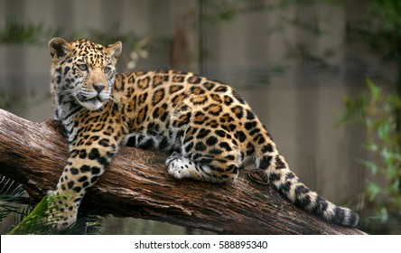

The jaguar is a large cat species and the only living member of the genus Panthera native to the Americas. With a body length of up to 1.85 m and a weight of up to 96 kg, it is the largest cat species in the Americas and the third largest in the world.
Scientific name: Panthera onca
Speed: 80 km/h (Maximum)
Mass: 56 – 96 kg (Adult)
Lifespan: 12 – 15 years (In the wild)
Conservation status: Near Threatened (Population decreasing) Encyclopedia of Life
Family: Felidae
Order: Carnivora